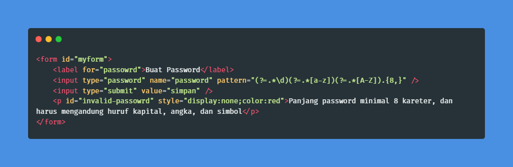

Apa itu
Regular Expression?
Sebuah teks (string) yang mendefinisikan sebuah pola pencarian sehingga dapat membantu kita untuk melakukan matching (pencocokan), locate (pencarian), dan manipulasi teks.

Contoh - contoh Penerapan dari Regex
Regex untuk Valdiasi Data
Pertama-tama, kita harus mendefinisikan pola regex untuk data yang valid. Kemudian, kita lakukan pencocokan dengan pola tersebut. Perhatikan atribut pattern, atribut ini digunakan untuk menyimpan pola regex. Pada contoh di bawah, polanya adalah pengecekan karakter yang diinputkan pada password. Berikut ini contohnya di HTML.Kode HTML:
Regex untuk Pencarian
Contoh penerapan regex untuk pencarian sebenarnya hampir sama dengan validasi data.
Pola regex dimasukan dalam kata kunci, lalu dicocokan dengan database atau teks.
Contoh program yang menerapkan ini adalah grep.
Program grep (globally search for a regular expression and print matching lines) biasanya kita
temukan di sistem operasi Unix dan Linux, bahkan ini menjadi program yang selalu ada di setiap
distro Linux.
Program grep melakukan pencarian berdasarkan pola regex yang diberikan, lalu mencetak output
hasilnya.
Contoh:
Misalkan kita ingin mencari teks pada syslog. Kita bisa melihat isi file syslog dengan cat.
Contoh:
Misalkan kita ingin mencari teks pada syslog. Kita bisa melihat isi file syslog dengan cat.